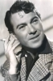

Also known as:La morte cammina con i tacchi alti (original title)
Country:Italy, 108 minutes
Spoken languages:Italian
Genres:Mystery, Thriller, Horror
Director(s):Luciano Ercoli
Writer(s):Ernesto Gastaldi, Mahnahén Velasco
Video Codec:Unknown
Number: 2595


Certification:
Storyline:
Exotic dancer Nicole finds herself terrorized by a black-clad assailant determined on procuring her murdered father's stolen gems. Fleeing Paris in hopes of evading her knife-wielding pursuer, Nicole arrives in England only to discover that death stalks her at every corner.
Cast: 

Medium: Bluray,
Comments: Part of: Giallo Essentials - Blue
Loaned: No
Aspect ratio: Unknown